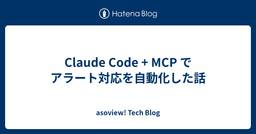
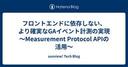

asoview! Tech Blog
https://tech.asoview.co.jp/
asoview! Tech Blog
フィード

Claude Code + MCP でアラート対応を自動化した話
asoview! Tech Blog
皆さんこんにちは、アソビューでエンジニアをしている李です。 アソビューでは、レジャー施設向けのDX支援SaaS「ウラカタチケット」を提供しています。施設運営の効率化から、エンドユーザーのチケット購入・利用体験までを支えるプラットフォームです。 今回は、このウラカタチケットの開発・運用の中で取り組んだ、LLMを使ったエラーアラートの自動分析について紹介します。 1. はじめに：なぜ作ったのか ウラカタチケットでは、日々さまざまなエラーが発生し、それらを Slack や Datadog で監視しています。 アラートが発生すると、Slack を確認し、Datadog でログを調べ、必要に応じて Gi…
2日前

フロントエンドに依存しない、より確実なGAイベント計測の実現 〜Measurement Protocol APIの活用〜
asoview! Tech Blog
Googleが提供するMeasurement Protocol APIを利用し、バックエンド経由でより確実にGAイベントを送信する仕組みを導入した話。
6日前
AIに任せるほど、顧客が近くなる
asoview! Tech Blog
こんにちは。アソビューCTOの兼平(disc99)🐼です！ 最近、AIと過ごす時間がずいぶん増えました。 思いついたことは、とりあえずAIに話しかけています。一人で悩む時間があるなら、先に一度会話したほうが早い。 そう気づいてから、頭の中だけで考えごとを抱えたまま止まっている時間が、ほとんどなくなりました。 悩んでいたことも、調べないと分からなかったことも、一人で何倍も進められています。 作る速度も、思っていたより上がりました。そして速くなったぶんだけ、プロダクト開発に対する自分の価値観が、どんどん書き換わっていきます。 前なら「これは費用対効果が合わない」で終わっていたものが、やってみる側に…
6日前

専任QAがいない開発チームで、QAのノウハウをSkillに変えてみた
asoview! Tech Blog
はじめに こんにちは。アソビューでQAエンジニア兼スクラムマスターを担当しております、石川和尚です！ スクラムマスターとして開発チームのファシリテーションを担い、QAも兼任しています。 今回は「専任QAがおらず、兼任のQAが1人しかいないチーム」で、自分の頭の中にあったテストのノウハウをClaudeのSkillという形に変えてみた話をお届けします。 こんな方に読んでいただけたら嬉しいです。 専任QAがおらず、品質担保が特定の誰かに依存してしまっている開発チームの方 スクラムマスターやEMなど、QA以外の役割と兼任しながら品質にも向き合っている方 Claude SkillのようなAIツールを、実…
16日前
Javaメジャーバージョンアップのテスト、想像の3倍大変だった話
asoview! Tech Blog
前提・背景 テスト設計が大変だった 既存ケースの流用でほぼ網羅できた 残るケースの追加は新規開発と並行で長期化 「抜粋」の必要性に気づいたが間に合わなかった テスト実行・管理が大変だった 開発の動作確認中からスケジュールが崩れた テスト実行中の阻害バグで想定が総崩れ ドメイン知識のない実施者が増えたことの影響 抜粋基準がないまま実行し粒度がバラバラに 質問対応に追われた日々 100件超のバグと再テストの連鎖 実施者の稼働状況もまちまちだった JIRA・仕様書・結果ファイルの三重管理 工夫・対処したこと ケース単位の実施率で進捗を可視化 抜粋基準のリスクを早期共有し柔軟に方針転換 バグの優先度と…
19日前
PMもプロダクトも未経験で大規模技術基盤アップデートを完遂した話 ~ 生成AIでの越境と、地図の先のコミュニケーション
asoview! Tech Blog
生成AIによる仕組み化と越境 レビュー観点のスキル化と配布 テスト環境まわりのブランチ操作の自動化 未経験プロダクトへの越境 “地図”の先を進めるコミュニケーション チームの中に入り込む 相手を選ばず、すぐ話す 消えていった、2つの躊躇い おわりに こんにちは、アソビューでSREエンジニアをしている長友です。 アソビューでは2025年10月から2026年6月にかけて、全プロダクトの技術基盤を一斉に更新する全社横断プロジェクトが動いていました。 サービスも通常の機能開発も止めずに進めるプロジェクトで、規模はおおよそ以下の通りです。 対象は35のプロダクトとライブラリ 完了までに関わった開発者は約…
19日前
Claude にコードレビューを任せてみて気づいたこと
asoview! Tech Blog
アソビューでエンジニアリングマネージャーをやっている竹内です。 今回は、コードレビューを Claude Code で自動化してみた体験について書こうと思います。ただ、この記事は「こうすればレビューを自動化できます」という手順の紹介がメインではありません。実際に運用してみて期待どおりだったこと、意外だった気づき、そしてやりすぎてわかったことまでを正直に書いて、「AI にどこまで任せるか」を考える材料にしてもらえたらと思っています。 背景 私は日々、多くの PR のレビュー依頼を受けています。この記事を書くにあたって直近3か月分を数えてみたところ、レビューを依頼された PR は約340件。月に11…
21日前
週6万件のエラー増加に埋もれて、一番重要なアラートを見逃したことで本当に守るべきものを学んだ話
asoview! Tech Blog
はじめに こんにちは、アソビュー！でソフトウェアエンジニアをしている河野です。2026年7月で、アソビューにジョインしてちょうど1年が経ちました。 今年の1月から、レジャー予約サービスの可用性担当を前任者から引き継いでいます。とはいえ、可用性領域の豊富な経験を持っていたから担当を任されたというわけではありませんでした。SLOという言葉の意味もあいまいでしたし、Datadogに至ってはこの会社に入って初めて触りました。前職はSIerで、どちらかというと新しい機能を作る「攻め」の開発が中心だったので、システムを安定して動かし続ける「守り」の世界は、正直なところ不慣れなまま任された、というのが実際の…
23日前
Claude Codeでループを回し続けてAI駆動で40,000テストケース書いた話
asoview! Tech Blog
こんにちは井上＠一人目SETです。 昨年のブログでSETとしての活動を紹介しましたが、その後「まずは基盤となるテストを整備しなければ、話にならない！」という結論に至りました。そこで現在、SETおよびQA体制として、E2E・UT・ITすべての自動テストシナリオの拡充に専念する方針で動いています。 私の方でSETとしてUT、ITの拡充をAI（主にClaude Code）をフル活用して進めましたのでそちらに関しての苦労や気付きなどを共有できればと思っております！ tech.asoview.co.jp 現状の課題、目的、目標 まずは、開始時点のUT、ITの実装、カバレッジ状況ですがお世辞にも十分とは言…
1ヶ月前
AI時代のサービス品質を、アクセシビリティからデバッグする
asoview! Tech Blog
こんにちは。アソビューでプロダクトデザインを担当している山中です。 今回は、AI時代におけるサービス品質を、アクセシビリティという観点から捉え直してみたいと思います。 最近、AIを使って画面案を出したり、文章を整えたり、コードを書いたりすることが身近になりました。以前なら時間がかかっていた作業も、いまは短い時間でたたき台まで進められます。この変化自体は、とても前向きなものだと思っています。 一方で、作れる量と速度が上がるほど、これまでと同じ確認方法では、プロダクトの「見えないバグ」を見落としやすくなるのではないかとも感じています。 見た目は整っている。動いているようにも見える。けれど、キーボー…
1ヶ月前
"非定型の壁"を突破する ― 生成AIで座席指定チケット返券業務を自動化した話（Dify × Claude Code × GAS）
asoview! Tech Blog
こんにちは、アソビュー大川です。ようやく夏本番ですね！花火大会に海にキャンプにお祭りと、お出かけの予定が次々に舞い込む楽しい季節になってきましたね。 私は普段アソビューで主に座席指定チケットを扱うプロダクトにPdMとして関わっています。前職ではエンターテインメント業界のチケット販売をするプレイガイドでシステム部門に所属していましたが、プログラミングをおこなうエンジニアとしての経歴はなくサービス企画、ステークホルダーやエンジニアとの要件合意を主に担当してきました。 昨年から今年にかけて「日々繰り返す定常作業を、できる限り事業部のメンバーから解放したい」という思いから、生成AIを業務の自動化にどう…
2ヶ月前
Nxを導入して多言語Monorepoのスケーラビリティを向上した話
asoview! Tech Blog
はじめに こんにちは。アソビューでSREを担当している @kassshi_dev です。 昨今、AIを前提とした開発を考えるうえで、Monorepoが採用されるケースが増えてきているのではないでしょうか。 Monorepoは、アプリケーションやライブラリ、インフラ設定などのコンテキストを1つのリポジトリに集約できるため、開発者だけでなくAIにとっても扱いやすい構成を取ることができます。 また、APIスキーマの変更から、フロントエンド・バックエンドの実装を1ブランチで完結できる点も大きな魅力です。 今回は、スケールし続けるMonorepoにNxを導入し、CI/CDの共通化や依存関係管理の整備を通…
2ヶ月前
3事業兼務のカオスを乗りこなす：めんどくさがりなデザイナーのスクラムマスターがAIと作った「チームが勝手に回る仕組み」
asoview! Tech Blog
こんにちは、アソビューでデザイナーをしている山口です。 デザイナーですが、なんにでも挑戦できる社風のおかげで、今は3事業を兼務するスクラムチームのスクラムマスター兼デザイナーをやっています。 ちゃんとしたスクラムマスターの資格を持っているわけではないですが、UI/UXが得意でコミュニケーションデザインにも関心があるので、そんな知見を活かしつつ、どうやったら開発がうまくいくのかを考えて行ったことを共有したいと思います。 ステークホルダーが多くて苦労しているスクラムマスターやPM、開発リーダーの方や、どうにかして自発的に動けるチームに変えていきたいと悩んでいる人、 それからAIが浸透してきてデザイ…
2ヶ月前
フォーカスを合わせろ！カバーに入ろう！FPSゲーマーが開発現場で実践する『勝てるチーム』の作り方
asoview! Tech Blog
はじめに 前提：マルチプレイFPSとはどんなゲームか？なぜ開発に活きるのか？ フォーカスを合わせろ！1週間スプリントで「あと1ミリの敵」を確実に落とせ FPSの理論 開発現場での答え合わせ MVPで「敵の正確な位置」を特定する FPSの理論 開発現場での答え合わせ いつでもカバーに入れる距離を保て！毎日1時間の『とりあえずVC（ボイチャ）』作戦 FPSの理論 開発現場での答え合わせ Tabキー連打で「ウルトの％（デイリーリリース数）」を確認せよ FPSの理論 開発現場での答え合わせ まとめ：ゲームも開発も、チームで「チャンピオン」を取るのが一番楽しい 最後に はじめに こんにちは！私はエンジニ…
2ヶ月前
急に生産性を3倍にしてと言われた入社2ヶ月目がやってよかったこと4選
asoview! Tech Blog
皆さん、入社直後に「個人の生産性、既存メンバー基準で3倍にしてね」と言われたこと、一度くらいはあると思います。 今回は、そんなみなさんが一度は悩んだことのある入社直後の生産性のあげ方について、私がやってよかったと思うことを 4つ 紹介したいと思います。 こんにちは、アソビューでエンジニアをしているuniです。 入社して2ヶ月、さあ初めての目標を決めるぞ、となった時にこのように言われました。 「今、エンジニア全員で生産性の向上に取り組んでもらってて、具体的にこのチームはユーザーストーリーに関わるリリースを既存メンバーの過去の実績との比較で3倍にしてほしい」（意訳） 🤨🤨🤨 今までの努力の仕方では…
3ヶ月前
SpringMVCを使ってさまざまな入力チェックをする
asoview! Tech Blog
アソビューで精算業務アプリケーションを担当しているアズマです。バックエンドをメインに保守開発をしています。 この記事を書いたきっかけは、AIにControllerの実装を任せたときに、入力チェックの実装方法がまちまちになってしまい、一部誤った実装になることがあったためです。 その理由として考えられたのは、入力チェックを実現するにはいくつかの定義方法があり、またフレームワークの機能を使うことなく実装もできてしまうことでした。 これらの曖昧な実装を防ぐため、フレームワークの機能を用いるのはもちろんのこと、使い方のルールを定義しておくことで、アプリケーション内で実装方法を揃えられ、レビューの負荷を下…
4ヶ月前
「技術広報って、何のためにやるんだっけ？」― 拡大期のチームでインセプションデッキをやってみた
asoview! Tech Blog
はじめに こんにちは！アソビュー株式会社で技術広報責任者もやってます！PdMのやまうち（@mauchi0106）です。 いきなりですが、ひとつ質問させてください。 「あなたのチームは、なぜそこにいるのか、メンバー全員で同じ言葉で答えられますか？」 ぼくは、この問いに最初は即答できませんでした。 アソビューでは、技術広報の専任チームは設けておらず、プロダクト組織のメンバーの中で技術広報の役割を担うメンバーが集まり、「チーム」としてその取り組みを推進しています。 組織が拡大フェーズに入り、ちょうど私がその責任者に着任したタイミングでもあったため、改めてチーム全員で「なぜ私たちはここにいるのか」とい…
4ヶ月前
自身の「聞こえ方のクセ」を設計課題と捉える。プロダクトデザイナーが選んだ、攻めの環境デバッグ
asoview! Tech Blog
こんにちは。アソビューでプロダクトデザインを担当している山中です。 今回は私自身の持つ「聞き取り困難性（LiD/APD）」という身体的特性を、解決すべき「環境のバグ」として定義し、そのデバッグ（最適化）に取り組んだ内容をまとめてみました。 世の中には、聴力に異常がなくても「特定の環境下で言葉が聞き取れない」という特性を持つ人がいます。かつての私がそうであったように、それを「集中力や努力の不足」だと自分を責めてしまっている方も少なくないかもしれません。 都会の喧騒という物理的ノイズを遮断し、開発工程の迷いという思考のノイズをテクノロジーで排除する。この記事が、同じような悩みを持つ方にとって、自身…
5ヶ月前
3年目の失敗。メール配信機能の要件定義で「なぜもっと踏み込めなかったのか」を言語化して見えた学びと教訓
asoview! Tech Blog
はじめに こんにちは！アソビュー株式会社でエンジニアをやっている加藤です。 ところでみなさん、最近食で感動した経験はありますか？私はスーパーで買った春キャベツが美味しすぎて感動しました。「一旦、春キャベツがうますぎて感動した話でもします？」と飲み会での箸休めトークで乱用しているのでそろそろ鬱陶しがられていそうです。やはり季節の食材は最高ですね。 というアイスブレイクはさておき、今回は私が入社3年目にして経験した、要件定義から実装までを1人で完結させたプロジェクトについて振り返り、その中で経験した失敗、そこから得た学びを共有したいと思います。 要件定義を初めて行うんやけど、不安やな〜...という…
5ヶ月前
弱さを見せる勇気
asoview! Tech Blog
1. 理想：「背中で見せるリーダー」でありたかった 2. 現実：何もできない自分への「後ろめたさ」 3. 転機：自分の中の「理想」を捨てた瞬間 4. 発見：弱さをさらけ出したからこそ見えた、チームの強さ 5. 結び：支えてくれるチームへの感謝 はじめまして、アソビューでシステムエンジニアをしている金子です。 現在は、スクラムマスターとしてチームを支えるために、日々奮闘しております。 本記事では、私がスクラムマスターとして振舞う以前、チームの「リーダー」として奔走していた頃の話をします。アソビューにリーダーという職位はありませんが、当時はプロジェクト管理やチーム改善を主導することをしており、当時…
6ヶ月前
Lambda@Edge × DynamoDBで実現するまとめて購入の入場制限ロジック
asoview! Tech Blog
はじめに 皆さんこんにちは、アソビューでエンジニアをしている李です。 アソビューでは、レジャー施設向けのDX支援SaaS「ウラカタチケット」を提供しています。施設運営の効率化からエンドユーザーのチケット購入体験までを支えるプラットフォームです。 最近、このウラカタチケットで「まとめて購入」機能をリリースし、新しい購入体験の提供を開始しました。 この機能は、購入処理の中で複数のAPIを呼び出したり、複数プランの情報を参照したりする必要があるため、従来のフローよりバックエンドに負荷がかかりやすい構造になっています。 この構造のままアクセスが集中すると、すべてのリクエストをそのまま受け入れてはバック…
7ヶ月前
アソビュー プロダクト組織 2025年の振り返り
asoview! Tech Blog
1. はじめに この記事はアソビュー！ Advent Calendar 2025 の25日目です🎅🎄！ アソビューCTOの兼平(disc99)🐼です！ 今年も多くのメンバーが記事を執筆してくれました。 それぞれの現場で起きているチャレンジや工夫が詰まった記事を、ぜひご覧いただければと思います！ この記事では、CTOという立場からプロダクト組織全体の2025年を振り返ります。 個別の技術トピックだけではなく、組織としてどのような意思決定を行い、何を目指してきたのかをお伝えします。 2025年のテーマを一言で表すなら「アウトカム志向への転換と基盤投資」です。 私たちは現在、20以上のサービス、1,…
8ヶ月前
toCプロダクトにおけるAI活用の本質 ~選択肢を増やすのではなく、選択に意味を与える~
asoview! Tech Blog
この記事はアソビュー！ Advent Calendar 2025 の25日目(表面)です。 Executive Summary はじめに なぜ BtoB の AI 活用は分かりやすいのか toC プロダクトが向き合っているのは「解釈の世界」 toC UXの多くは、ユーザーに「意味の補完」を強いている UIにAIを置くことと、プロダクトが賢くなることは別 toCにおけるAI活用の本丸は「意味の構造化」 選択肢を増やすのではなく、選択に意味を与える なぜ toC で「AIをフル活用している事例」は少なく見えるのか おわりに：Advent Calendarの最後に残したい問い Executive S…
8ヶ月前
SnowflakeからBigQueryへ。アソビューがDWHを統合した意思決定の背景と展望
asoview! Tech Blog
2025年11月、Google Cloud 主催『Data & AI Summit '25 Fall』に登壇させていただきました。本記事では、登壇資料をベースに、口頭で話した内容や話しきれなかった内容を補足しながら、アソビューがデータ基盤のアーキテクチャを再設計するに至った意思決定の裏側を共有します。
8ヶ月前
プロダクトマネジメント初級者が考える、プロダクト開発チームの成長と事業の成長を両立させるには
asoview! Tech Blog
こちらはアソビュー Advent Calendar 2025 の 12/24 (シリーズ1)の記事です。 はじめに こんにちは、アソビュー大川です。クリスマスに年末年始と、お出かけ先はお決まりでしょうか？我々アソビューはそんな皆さんのお出かけ先や遊びのご提案ができるようにいくつものプロダクトを生み出し、日々サービスを改善し続けています。 そんな中、私のいまの役割はプロダクトマネ－ジャーです。私がプロダクトマネージャーを担うようになったのは1年ほど前から。これまで未経験のポジションであったため、日々試行錯誤しながら必要な考え方を身につけていっている最中です。 本稿ではそのようなプロダクトマネジメ…
8ヶ月前
AIサブエージェントで思考を整理する - ノートを価値に変換する試み
asoview! Tech Blog
はじめに こちらの記事は、アソビュー！ Advent Calendar 2025 の23日目（表面）です。 皆さんこんにちは、アソビューでエンジニアをしている竹村です。 Obsidian や Logseq のようなノートツールは、情報を分解し、リンクし、蓄積するという点で非常に強力です。 個人の知識管理として、すでに十分に洗練されていると感じている方も多いと思います。 一方で、ノートが増えるほど、 ノートを残してはいるが活用できている気がしない 情報は揃っているのに結論に至らない 自分の視点をなぞっているだけに感じる といった停滞感を覚えることもあります。 生成AIを使えば思考やアウトプットを…
8ヶ月前
「やること」ではなく「到達したい状態」を共有したら、アウトカムを担うチームが拡張した話
asoview! Tech Blog
はじめに こちらは、アソビュー Advent Calendar 2025の23日目（裏面）の記事になります。 こんにちは。 アソビューでプロダクトマネージャーをしているやまうちです。 クリスマスイヴまであと1日ですね。 皆さん、クリスマスプレゼントはもう決まりましたでしょうか。 私は先日参加したトレイルランの大会中にiPhoneを水没させてしまい、新しいiPhoneが自分へのクリスマスプレゼントになりました。動作がサクサクで、とても快適です。笑 さて今回は、開発チーム以外にもプロダクトゴールを共有したことで、アウトカムを生み出すチームの人数と役割が拡張した話をしたいと思います。 僕らのチームに…
8ヶ月前
ITエンジニアと言語化
asoview! Tech Blog
はじめに アソビューAdvent Calendar 2025の22日目（表面）です。 こんにちは。アソビューで精算業務システムを担当しているアズマです。アソビューでは、契約パートナー様の電子チケットの販売やアクティビティの予約を扱います。チケットの購入やアクティビティの予約はアソビューを通じて行われるため、パートナー様へは月に1度精算を行います。現在わたしはこの精算業務のシステムを保守開発していますが、パートナー様からの精算関連のお問い合わせや、社内からのシステムへの問い合わせも受けています。 例えば「システムからの出力結果がおかしいです」「完了画面が表示されたのに次の画面へ行くと表示されませ…
8ヶ月前
開発チームを「割り込み」から守る。EMが実践した問い合わせフローの交通整理
asoview! Tech Blog
こちらの記事は、アソビュー！ Advent Calendar 2025 の21日目（表面）です。 こんにちは。アソビューでエンジニアリングマネージャーをしている五十嵐です。 もうすぐ2025年も幕を閉じますね。 先日発表された今年の漢字は「熊」でしたが、みなさんはご自身の1年を漢字で表現すると何になりますか？ 私も考えてみましたがあまり思い浮かばなかったので、1年間壁打ち相手になってくれたChatGPT君にお尋ねしたところ....... 「整」とのことでした！ 派手さはないですが、「混沌をそのまま受け止め、壊さずに整える」 という難易度の高いフェーズにいる一年、という印象です。 というありがた…
8ヶ月前
社内の事例を見て活用のイメージが湧いた：LLM活用の第一歩を踏み出せた理由
asoview! Tech Blog
アソビュー Advent Calendar 2025の20日目（裏面）です。 アソビューでエンジニアリングマネージャーをやっている竹内です。 今回は私自身がコーディング以外でのLLM活用の第一歩を踏み出せた理由について書こうと思います。 背景 皆さん御存知の通り、ChatGPTをはじめとしたLLMが登場し実業務での活用が進んできています。 私もコーディングする際に主にCursorなどを使っていますが、コーディング以外で活用するというのはChatGPTやGeminiにチャットでエラーの調査やテキストの翻訳といったぐらいでした。 LLMをもっと活用したいとは思っていましたが、活用のきっかけが見つか…
8ヶ月前